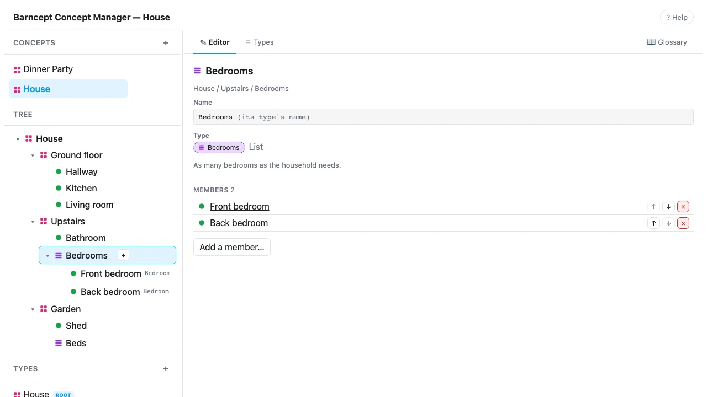
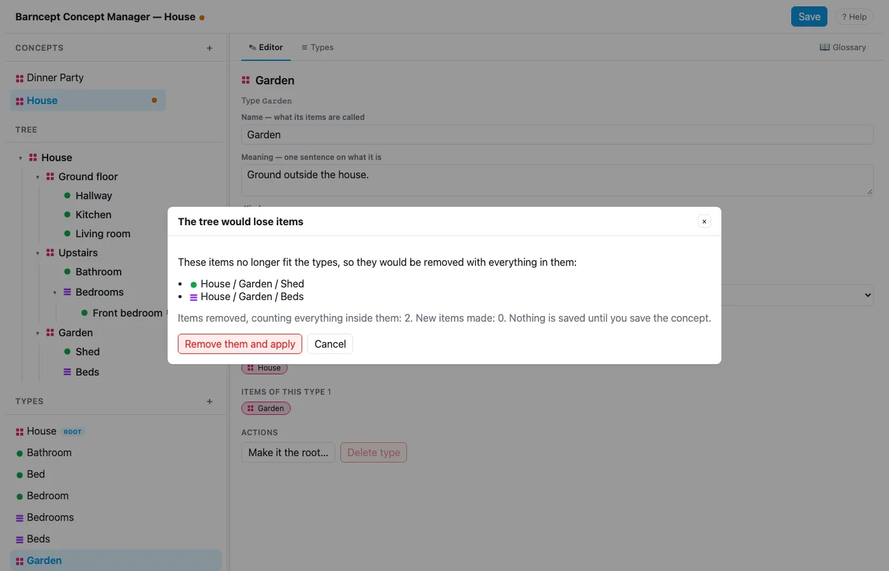

Your understanding outlives your code.
Code is rewritten, frameworks come and go, folders get reshuffled. What lasts is how you understand the domain. With Barncept you name the types of thing in one subject, and Barncept builds the tree of items that follows them. Every type has a plain meaning, every change is checked so the tree never breaks its types, and the whole can be realised in any way you like.

Types that explain themselves.
A concept names the types of thing in one subject, and every type has a name and a meaning written in plain words. A type is a leaf, which holds nothing, a list of one type, or a map of several. A house is a map of a ground floor, an upstairs and a garden; its bedrooms are a list, and each bedroom is a leaf.
Months later, anyone can open the tree and understand not just what exists, but what each thing is for. Each concept’s Glossary puts every type and its meaning on one page, so a newcomer, or an AI agent, can learn the vocabulary in one read.
A change that would break it is refused.
Barncept builds the tree from the types: a map’s items are made for you, one for each type it holds, and you add the members of a list, each with a name you give it. Keeping the tree in line with its types is Barncept’s core job. It is never left half-broken: a type nobody has described, a map that holds itself forever, two members of one list with the same name, or a member added where there is no list is refused, with a message that says why. That makes it safer to drive than the file underneath, whether a person, a program or an AI agent is doing the driving.
A file that was broken outside Barncept fails loudly when it is read, and says what is wrong and where.
Before any change is kept
- Add a Back bedroom to Bedroomskept
- Add a second Back bedroomrefused: the name is taken
- Add a Pantry to the Kitchenrefused: a leaf holds nothing
One engine. Clear boundaries.
Barncept keeps concepts through a generic interface, and knows nothing of what they are about. Barnark uses it for architecture templates. Barnspec uses its generic document store to keep each area of business. Each tool keeps its own API and domain rules, so Barncept does not need to know what either tool means by what it keeps.
- Barnarkarchitecture rules and folder checks
- Barnspecbusiness rules and project management
- Barncepttypes, and trees that follow them
Change the types. See what goes first.
Understanding grows, and the types change with it. Change what a map or a list holds, or turn a list into a leaf, and Barncept fits the tree to the new types: an item still of the type expected where it sits stays, with its name, a map entry the new types call for is made, and anything whose type has gone is removed with everything in it.
Barncept decides nothing for you. Before anything is removed, the editor lists it and asks, and nothing is saved until you save the concept.

One model. Any shape.
Barncept never decides what a tree becomes. A folder structure, a diagram and a set of documents are each one possible realisation, never the model itself. Turn the same tree into real folders, an architecture to check code against, or whatever you need next.
Four come built in, each for whoever reads it. View and download any of them in the browser, or export them from the command line.
Every Barnark architecture template is written as a Barncept concept, and can be opened and edited in exactly the same way.
- Documentfor people: a heading per item, its meaning beneath
- Foldersfor developers and tools, a README in each
- Diagramfor a README, a pull request or a slide
- Treefor a quick look
How it works underneath.
Everything above, in more detail, for when you want it.
Types and itemsLeaves, lists and maps, and the tree that follows them
- Leaf: a type of nothing, such as
Kitchen. - List: a type of exactly one type, such as
Bedrooms, a list ofBedroom. Its items are its members, any number of them, each with a name you give it. - Map: a type of a set of types, each at most once, such as
House, a map ofGround floor,UpstairsandGarden.
A concept names its root type, and types refer to each other only by name, so one type can be used in many places. Every item follows one type and has an id that Barncept generates. A concept written as types only is given its skeleton when it is read: the root, and every map entry below it, down to empty lists and leaves. Add two bedrooms and the House reads:
House
|
+--Ground floor
|
+--Hallway
+--Kitchen
+--Living room
+--Upstairs
|
+--Bathroom
+--Bedrooms
|
+--Front bedroom
+--Back bedroom
+--Garden
|
+--Shed
+--BedsThe editor marks a map, a list and a leaf each with its own icon, and its Help page explains every word it uses.
Keeping many concepts in orderA check for CI
barncept check reads every concept and prints one line each: valid, or broken with what broke it. It fails on a broken concept or an unreadable file, so it fits in CI.
$ vendor/bin/barncept check
Barn: /path/to/project
Checking the concepts in /path/to/project/.barn/barncept/concepts
Garden: valid
Pond: broken: Type 'Pond' is of 'Fish', which is not one of the concept's types.Exporting a conceptA document, folders or a diagram
Pick one realisation of a concept and export it. Nothing is ever overwritten: a file goes to a path that does not exist yet, and folders to an empty one.
$ vendor/bin/barncept export House --as=markdown --to=docs/house.md
$ vendor/bin/barncept export House --as=folder --to=house
$ vendor/bin/barncept export House --as=mermaid
flowchart TD
n1["House"]
n2["Ground floor"]
n1 --> n2Realising a concept as a PHP codebaseScaffold it, then check it still matches
Barnscaff, Barncept’s companion, turns a concept’s tree into a PHP codebase’s folders and files, and scans an existing folder to check it still matches.
$ vendor/bin/barnscaff scaffold House ./generated --apply
$ vendor/bin/barnscaff scan House ./generated
Conformant.From PHPRead a concept, add a member, save it, export it
This example reads a House concept already saved in .barn/barncept/concepts/. Place the script in the project root, with Barncept and its command line or browser app installed.
<?php
use Rmb32\Barncept\Api\Factory\ConceptEditorFactory;
use Rmb32\Barncept\Api\Factory\ConceptStoreFactory;
use Rmb32\Barncept\Api\Factory\ProjectionWriterFactory;
use Rmb32\Barncept\Api\Factory\ProjectorRegistryFactory;
use Rmb32\Barncept\Api\ValueObject\ItemName;
use Rmb32\Barncept\Api\ValueObject\ItemPath;
use Rmb32\Barncept\Api\ValueObject\Projection\ProjectionKind;
use Rmb32\BarnPaths\Api\ValueObject\BarnPaths;
require __DIR__ . '/vendor/autoload.php';
$barn = BarnPaths::at(__DIR__);
$store = new ConceptStoreFactory()->create($barn->barnceptConcepts);
$house = new ConceptEditorFactory()->create()->addMember(
$store->read('House'),
new ItemPath('Upstairs', 'Bedrooms'),
new ItemName('Front bedroom'),
);
$store->write($house);
$document = new ProjectorRegistryFactory()->create()
->get(ProjectionKind::new('markdown'))
->project($house);
new ProjectionWriterFactory()->create()->write($document, __DIR__ . '/house.md');Open your concepts in the browser.
Barncept needs PHP 8.5, Composer and the ds extension. If the project has no barn, run init once to create .barn/, then open the editor. Barncept keeps its concepts in .barn/barncept/concepts/.
$ vendor/bin/barncept init
$ vendor/bin/barncept guiInstallationInstall from Packagist
Require Barncept, its command line and its browser app:
$ composer require rmb32/barncept rmb32/barncept-cli rmb32/barncept-gui